DEA Warns of "Mass Quantities" of Counterfeit Pills Made with Fentanyl
~4 min read | Published on 2019-11-04, tagged Fentanyl, General-News using 902 words.
In an official statement, the Drug Enforcement Administration warned that 27 percent of the pills seized between January and March of this year contained fentanyl. According to the DEA, Mexican cartels are manufacturing these counterfeit pills and distributing them throughout the United States.
Coincidentally, “The Drug Llama,” just admitted selling counterfeit oxycodone pills laced with fentanyl on the darkweb and laundering money through members of a Mexican cartel.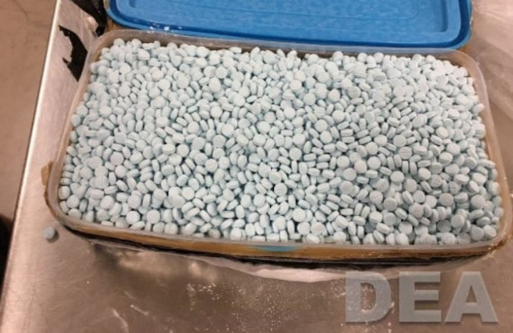
The Drug Enforcement Administration is alerting the public of dangerous counterfeit pills killing Americans. Mexican drug cartels are manufacturing mass quantities of counterfeit prescription pills containing fentanyl, a dangerous synthetic opioid that is lethal in minute doses, for distribution throughout North America.
Based on a sampling of tablets seized nationwide between January and March 2019, DEA found that 27 percent contained potentially lethal doses of fentanyl.
“Capitalizing on the opioid epidemic and prescription drug abuse in the United States, drug trafficking organizations are now sending counterfeit pills made with fentanyl in bulk to the United States for distribution,” said DEA Acting Administrator Uttam Dhillon. “Counterfeit pills that contain fentanyl and fentanyl-laced heroin are responsible for thousands of opioid-related deaths in the United States each year.”
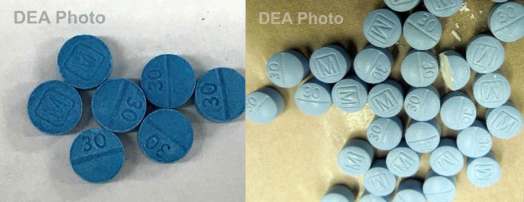
Fentanyl and other highly potent synthetic opioids remain the primary driver behind the ongoing opioid crisis, with fentanyl involved in more deaths than any other illicit drug.
The DEA also provided a link to their Fentanyl Signature Profiling Program Report. The report contains information obtained through the testing of seized fentanyl throughout the United States. Below are some sections of the report. It is fairly technical. The full report is even more technical and available here as a PDF on the DEA’s website.
Fentanyl Signature Profiling Program Report
The Fentanyl Signature Profiling Program (FSPP) performs in-depth chemical analyses on fentanyl and fentanyl-related exhibits obtained from seizures made throughout the United States. Analytical methodologies developed at the Special Testing and Research Laboratory (SFL1) through Operation Death Dragon, give in-depth reporting on seizures and also link seizures for intelligence purposes. Seizure linkages are disseminated to DEA agents through a Scientific Intelligence Report (SIR), which details the linkages of two or more seizures. This report details the results and conclusions derived from these analyses that are reported on a quarterly basis. FSPP data is not intended to reflect U.S. market share, but is rather a snapshot of samples submitted to this laboratory from the 7 DEA regional laboratories.
For this reporting period, 344 fentanyl and fentanyl-related exhibits seized during CY 2019 were examined by the FSPP (cumulative). Of these exhibits, 316 were fentanyl, and the remaining 28 were fentanyl-related compounds.CY 2019 Fentanyl Seizures
Powders: Two hundred six powder exhibits representing 382 kg were examined. The average fentanyl purity was 9.7% with a range of 0.05% to 98.1%. Five exhibits were high purity fentanyl HCl having purities exceeding 90%. The overwhelming majority of exhibits were fentanyl HCl with the exception of 9 exhibits identified as fentanyl citrate. Approximately 70% of all exhibits were primarily diluted with sugars: lactose (33%), mannitol (20%), and inositol (19%). Heroin was detected in 21% of the exhibits (1.1% to 85.8% heroin purity). The predominant synthetic route was determined to be the Janssen Method. The FSPP has added an additional category indicating the presence of impurities from multiple routes. This category will be referred to as “Mixed.” The following graphic illustrates the determined synthetic routes for powder exhibits.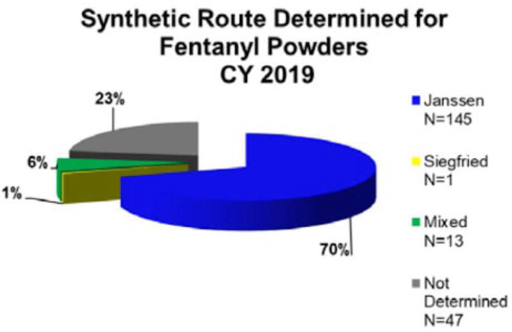
The following graphic illustrates average fentanyl powder purity by seizure size. Due to changes in the FSPP sampling plan, seizures below 100 g are no longer represented.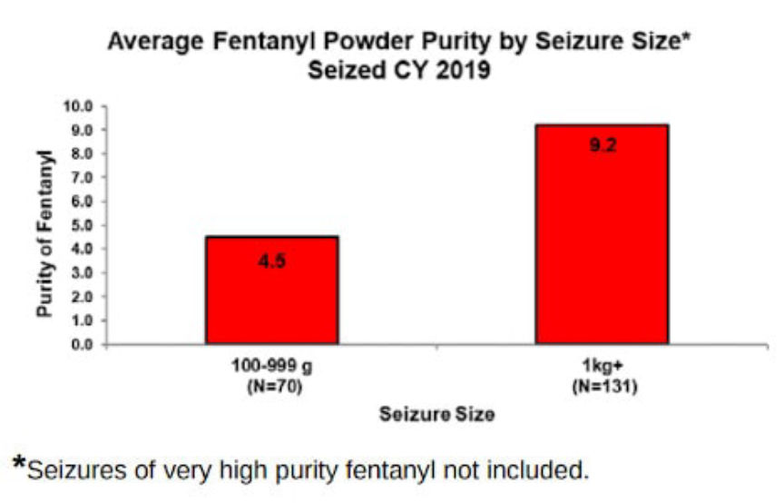
The following graphic illustrates the most common cutting agents.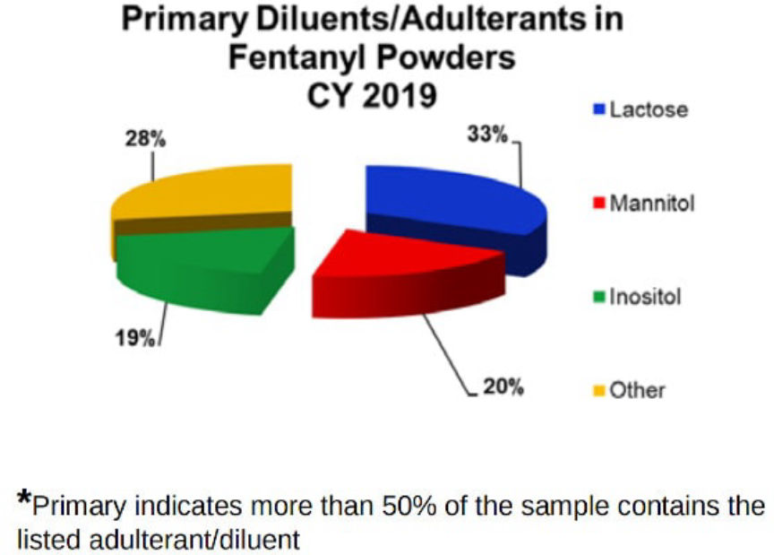
Tablets: One hundred six tablet exhibits representing 154 kg were examined. The average tablet contained 1.7 mg of fentanyl with a range of 0.02 to 4.2 mg/tablet. All exhibits were fentanyl HCl. The salt form could not be determined for eight exhibits due to low fentanyl concentration. Approximately 75% of tablet exhibits contained a combination of acetaminophen, dipyrone, lactose, and mannitol.
Fentanyl/Heroin Mixtures: As previously noted, fentanyl was mixed with heroin in 21% of the exhibits examined. Wholesale fentanyl/heroin seizures within the continental U.S. (typically >1 kg) accounted for 35 kg of the 382 kg of powders examined (9% by weight). Analyses of 11 exhibits (31% sample rate) from these seizures found an average fentanyl and heroin purity of 2.4% and 29.6%, respectively.
Tablets Containing Lethal Doses: A lethal dose of fentanyl is postulated to be about 2 milligrams (0.002 grams). Twenty-nine of the tablet exhibits described above (27%) contained a potential lethal dose.
The majority of samples are submitted to the FSPP from the seven DEA regional laboratories. The following graphic illustrates submissions to SFL1 from DEA regional laboratories and is intended to show the distribution of examined samples throughout the U.S.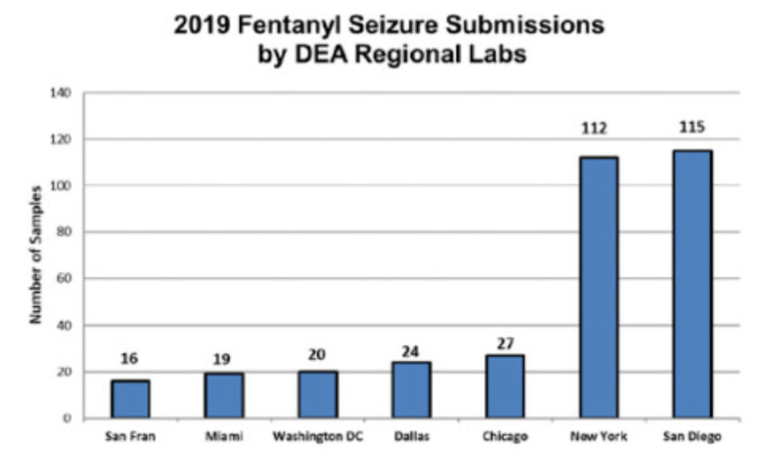
The primary focus of the FSPP is to make seizure linkages through multiple, in-depth signature methodologies developed at SFL1. The majority of the linkages made are “cold hit” linkages where the investigators are unaware that two or more seemingly unrelated seizures contained the same fentanyl. Many of these seizure linkages show cross-country trafficking routes (i.e., identical fentanyl seized on both the east and west coasts). For CY 2019 seizures, 11 separate sets of seizure linkages have been made which encompass 25 different exhibits totaling over 16 kg.
Archived DEA Release
Coincidentally, “The Drug Llama,” just admitted selling counterfeit oxycodone pills laced with fentanyl on the darkweb and laundering money through members of a Mexican cartel.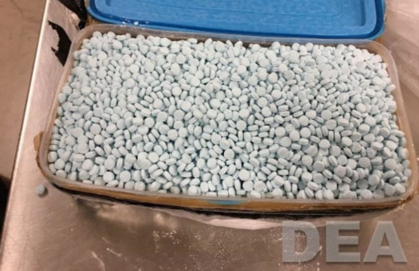
A Box of Seized Fentanyl Pills | DEA
The Drug Enforcement Administration is alerting the public of dangerous counterfeit pills killing Americans. Mexican drug cartels are manufacturing mass quantities of counterfeit prescription pills containing fentanyl, a dangerous synthetic opioid that is lethal in minute doses, for distribution throughout North America.
Based on a sampling of tablets seized nationwide between January and March 2019, DEA found that 27 percent contained potentially lethal doses of fentanyl.
“Capitalizing on the opioid epidemic and prescription drug abuse in the United States, drug trafficking organizations are now sending counterfeit pills made with fentanyl in bulk to the United States for distribution,” said DEA Acting Administrator Uttam Dhillon. “Counterfeit pills that contain fentanyl and fentanyl-laced heroin are responsible for thousands of opioid-related deaths in the United States each year.”
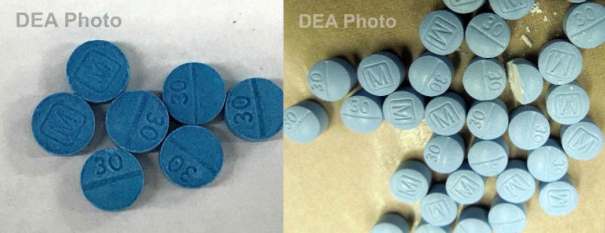
Seized Fentanyl Pills | DEA
Fentanyl and other highly potent synthetic opioids remain the primary driver behind the ongoing opioid crisis, with fentanyl involved in more deaths than any other illicit drug.
The DEA also provided a link to their Fentanyl Signature Profiling Program Report. The report contains information obtained through the testing of seized fentanyl throughout the United States. Below are some sections of the report. It is fairly technical. The full report is even more technical and available here as a PDF on the DEA’s website.
Fentanyl Signature Profiling Program Report
The Fentanyl Signature Profiling Program (FSPP) performs in-depth chemical analyses on fentanyl and fentanyl-related exhibits obtained from seizures made throughout the United States. Analytical methodologies developed at the Special Testing and Research Laboratory (SFL1) through Operation Death Dragon, give in-depth reporting on seizures and also link seizures for intelligence purposes. Seizure linkages are disseminated to DEA agents through a Scientific Intelligence Report (SIR), which details the linkages of two or more seizures. This report details the results and conclusions derived from these analyses that are reported on a quarterly basis. FSPP data is not intended to reflect U.S. market share, but is rather a snapshot of samples submitted to this laboratory from the 7 DEA regional laboratories.
For this reporting period, 344 fentanyl and fentanyl-related exhibits seized during CY 2019 were examined by the FSPP (cumulative). Of these exhibits, 316 were fentanyl, and the remaining 28 were fentanyl-related compounds.CY 2019 Fentanyl Seizures
Powders: Two hundred six powder exhibits representing 382 kg were examined. The average fentanyl purity was 9.7% with a range of 0.05% to 98.1%. Five exhibits were high purity fentanyl HCl having purities exceeding 90%. The overwhelming majority of exhibits were fentanyl HCl with the exception of 9 exhibits identified as fentanyl citrate. Approximately 70% of all exhibits were primarily diluted with sugars: lactose (33%), mannitol (20%), and inositol (19%). Heroin was detected in 21% of the exhibits (1.1% to 85.8% heroin purity). The predominant synthetic route was determined to be the Janssen Method. The FSPP has added an additional category indicating the presence of impurities from multiple routes. This category will be referred to as “Mixed.” The following graphic illustrates the determined synthetic routes for powder exhibits.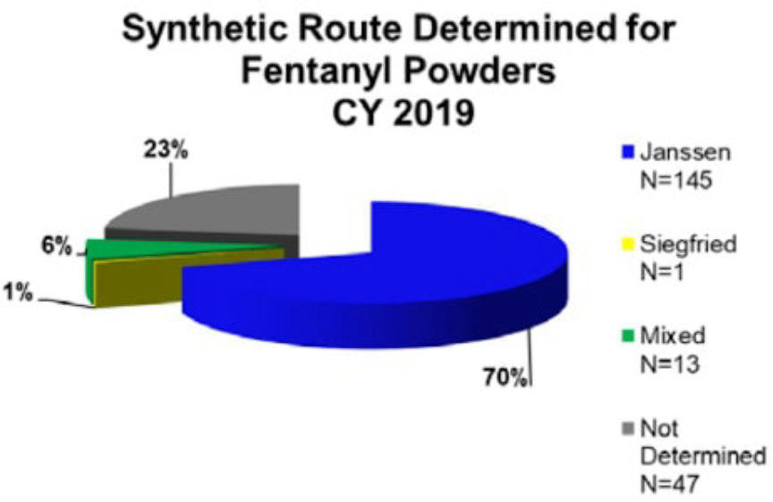
Synthetic routes for powder exhibits | DEA
The following graphic illustrates average fentanyl powder purity by seizure size. Due to changes in the FSPP sampling plan, seizures below 100 g are no longer represented.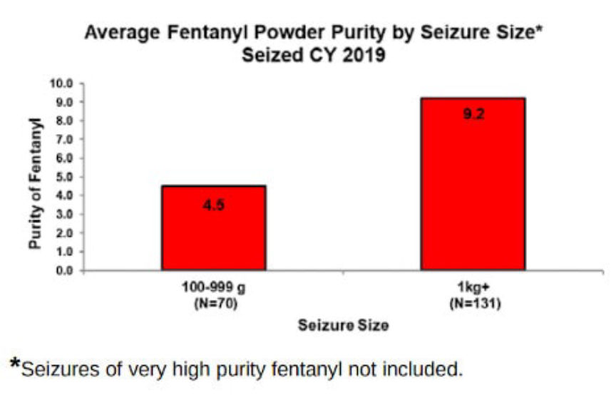
Fentanyl Purity by Seizure | DEA
The following graphic illustrates the most common cutting agents.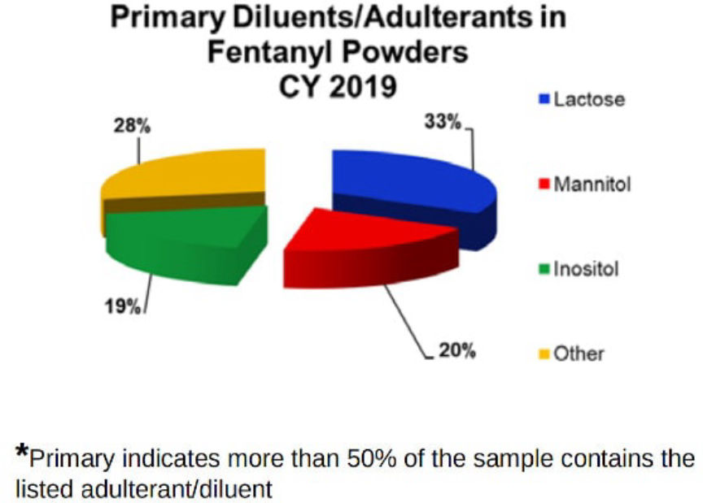
The most common cutting agents | DEA
Tablets: One hundred six tablet exhibits representing 154 kg were examined. The average tablet contained 1.7 mg of fentanyl with a range of 0.02 to 4.2 mg/tablet. All exhibits were fentanyl HCl. The salt form could not be determined for eight exhibits due to low fentanyl concentration. Approximately 75% of tablet exhibits contained a combination of acetaminophen, dipyrone, lactose, and mannitol.
Fentanyl/Heroin Mixtures: As previously noted, fentanyl was mixed with heroin in 21% of the exhibits examined. Wholesale fentanyl/heroin seizures within the continental U.S. (typically >1 kg) accounted for 35 kg of the 382 kg of powders examined (9% by weight). Analyses of 11 exhibits (31% sample rate) from these seizures found an average fentanyl and heroin purity of 2.4% and 29.6%, respectively.
Tablets Containing Lethal Doses: A lethal dose of fentanyl is postulated to be about 2 milligrams (0.002 grams). Twenty-nine of the tablet exhibits described above (27%) contained a potential lethal dose.
The majority of samples are submitted to the FSPP from the seven DEA regional laboratories. The following graphic illustrates submissions to SFL1 from DEA regional laboratories and is intended to show the distribution of examined samples throughout the U.S.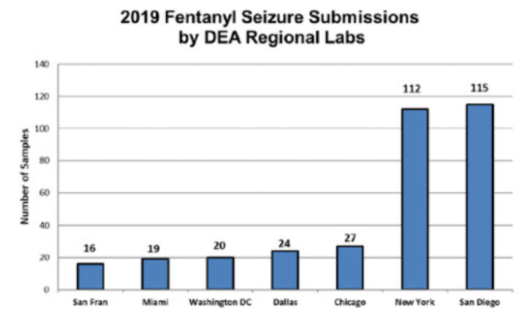
Samples Tested Throughout the US | DEA
Seizure Linkages (CY 2019)The primary focus of the FSPP is to make seizure linkages through multiple, in-depth signature methodologies developed at SFL1. The majority of the linkages made are “cold hit” linkages where the investigators are unaware that two or more seemingly unrelated seizures contained the same fentanyl. Many of these seizure linkages show cross-country trafficking routes (i.e., identical fentanyl seized on both the east and west coasts). For CY 2019 seizures, 11 separate sets of seizure linkages have been made which encompass 25 different exhibits totaling over 16 kg.
Archived DEA Release